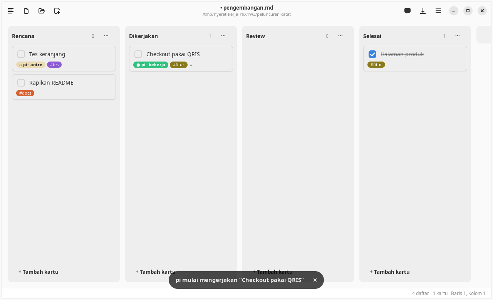
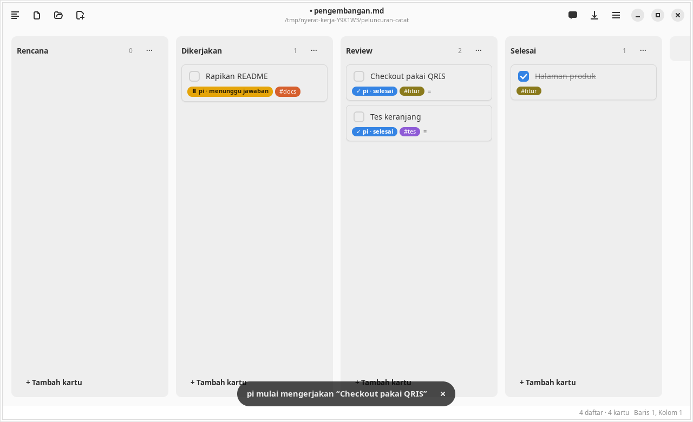
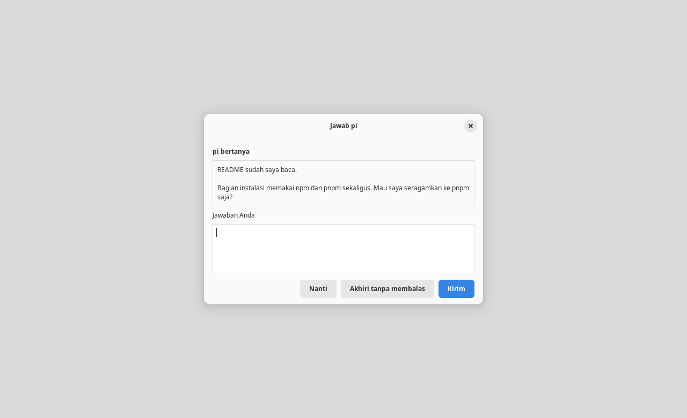

Agent
Orkestrator pi
Nyerat bisa menjadi orkestrator harness eksternal: kartu kanban yang ditugaskan ke @pi dikerjakan pi di folder proyek lain, misalnya repo kode, bukan di folder kerja Nyerat.

Menugaskan kartu
---
kanban: true
proyek: web-ecommerce ← proyek bawaan papan
---
## Rencana
- [ ] Checkout pakai QRIS @pi #fitur
- [ ] Tes keranjang @pi #proyek/toko-admin ← tag proyek menang atas frontmatter- Tulis
@pidi judul kartu, atau isi Dikerjakan oleh di dialog sunting kartu. - Klik kanan kartu → Kerjakan dengan pi.
- Proyek diambil dari tag
#proyek/namaatau frontmatter papanproyek: nama. Folder proyek ditanyakan sekali lalu diingat di pengaturan; kartu tanpa proyek diberi tag dari nama foldernya.
Saat mulai, kartu pindah ke daftar Dikerjakan. Saat selesai, ke Review dengan catatan ↳ pi selesai …: ringkasan. Bila gagal, kartu tetap di tempatnya dengan catatan ↳ pi gagal …: alasan.
Catatan sebagai konteks
Pi bekerja di folder proyek, jadi ia tidak bisa membaca catatan di folder kerja Nyerat. Tautkan catatannya di kartu dengan [[ ]], dan Nyerat menyalin isinya ke prompt.
- [ ] Checkout pakai QRIS [[Spesifikasi#Pembayaran]] @pi
Ikuti keputusan di [[Catatan Rapat]].- Tautan di judul maupun catatan kartu ikut, paling banyak 10 per kartu. Nama dicari dengan aturan yang sama seperti Ctrl+klik di editor.
[[Catatan#Bagian]]hanya menyalin bagian di bawah heading itu, sampai heading setingkat berikutnya.- Isi masuk ke bagian Catatan terkait dari Nyerat di prompt, dibungkus blok kode. Tiap catatan dipotong pada 8.000 karakter, dan totalnya 24.000 karakter. Catatan yang tidak ditemukan tetap disebut, supaya pi tahu ada yang hilang.
- Dokumen yang sedang terbuka dibaca dari editornya, jadi suntingan yang belum disimpan ikut.
- Prompt lengkap, termasuk isi catatan, terlihat di log pi.
- Isi catatan diambil saat Kerjakan dengan pi. Balas pi melanjutkan sesi yang sama tanpa menyalinnya lagi.
Di papan, tautan di judul kartu bisa diklik untuk membuka catatannya, dan tautan di catatan kartu tampil sebagai baris ↗ nama di bawah chip. Kolom catatan di dialog sunting kartu memberi saran nama saat Anda mengetik [[.
Status kartu
| Chip | Arti |
|---|---|
| ◇ | Ditugaskan |
| ◌ | Antre: proyek yang sama sedang dikerjakan kartu lain |
| ● | Bekerja |
| ⏸ | Menunggu jawaban Anda |
| ✓ / ✕ / ■ | Selesai / gagal / dihentikan |
Satu folder proyek dikerjakan satu harness sekaligus; kartu lain mengantre dan mulai otomatis.

Menjawab pi
Pi dijalankan dalam mode RPC, jadi percakapannya bisa dilanjutkan dari Nyerat:
- Pertanyaan. Bila jawaban pi diakhiri
?, kartu menjadi ⏸ dan tetap di Dikerjakan. Klik kanan → Jawab pi… membuka pertanyaannya beserta kotak jawaban. - Izin dan masukan. Extension pi yang meminta izin (mis. konfirmasi sebelum
rm -rf) tampil di dialog yang sama: Izinkan/Tolak, pilihan, atau isian. - Nanti membiarkan pi tetap menunggu; Akhiri tanpa membalas menutup sesinya.
- Beri Arahan pi… selagi pi bekerja: arahan diterima sebelum langkah berikutnya, tanpa menghentikan pekerjaan.
- Balas pi… setelah selesai: melanjutkan sesi pi yang sama sehingga kartu dikerjakan lagi.


Log dan kendali
Menu kartu juga punya:
- Lihat Log pi: alat, penalaran, jawaban, permintaan dan jawaban Anda, token, biaya, dan id sesi untuk
pi --session <id> - Hentikan pi / Batalkan Antrean
- Lepas Penugasan dan Ganti Folder Proyek…

Batas akses
Tinjau hasilnya di repo proyek itu sendiri (pi diminta tidak commit). Pi tidak meminta izin alat sendiri; permintaan izin datang dari extension pi yang Anda pasang, seperti permission-gate.
- Isi Markdown hanya menyebut nama proyek. Nama dipetakan ke folder yang hanya bisa diisi lewat dialog pilih folder, jadi kartu atau agent tidak bisa mengarahkan harness ke folder sembarang.
- Folder kerja Nyerat, isinya, induknya, root, dan path relatif ditolak sebagai folder proyek.
- Isi catatan yang ditautkan
[[ ]]dari folder kerja Nyerat dikirim ke pi sebagai bagian prompt (dan ke penyedia model yang dipakai pi). Jangan menautkan catatan yang tidak boleh keluar. Hanya berkas Markdown di folder kerja yang bisa ditautkan; folder bertitik, symlink, dan path di luar folder kerja tidak ikut. - Nyerat sendiri tidak menulis ke folder proyek. Menutup jendela menghentikan semua harness yang berjalan.